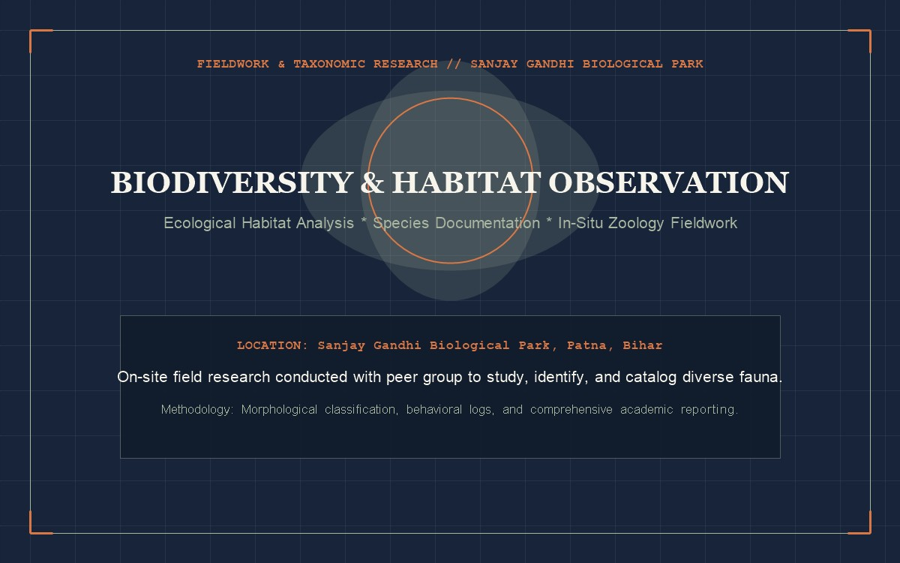

Biodiversity & Habitat Observation Project
An intensive empirical investigation of faunal biodiversity, captive and natural habitat conditions, and taxonomic documentation conducted at the Sanjay Gandhi Biological Park, Patna.
Research Overview & Execution
As part of the Zoology curriculum at BS College (Patliputra University), this project engaged in comprehensive on-site research to systematically catalog animal species, evaluate behavioral patterns, and evaluate physical adaptations across distinct enclosure and semi-wild microhabitats.
Conducted rigorous on-site field research at Sanjay Gandhi Biological Park, Patna, recording primary observational logs in natural conditions.
Collaborated within an academic peer group, synchronizing observation shifts, validating sightings, and cross-verifying field notes.
Studied, identified, and documented diverse animal species, carefully analyzing diagnostic anatomical and behavioral features.
Compiled extensive field data into a structured academic report complete with taxonomic classifications, sketches, and ecological conclusions.
Applied Skills & Key Takeaways
This project tested the translation of theoretical zoological principles into real-world observation. Key strengths demonstrated include:
- Field Research & Observation: Executing methodical specimen monitoring under variable weather and enclosure environments.
- Systematic Data Collection: Maintaining meticulous physical logs and tabulating characteristic morphometrics.
- Team Collaboration & Multitasking: Dividing duties equitably among peers and coordinating synthesis under academic deadlines.
- Formal Academic Reporting: Formatting complex observational data into clear, readable documentation using MS Word and MS Excel.